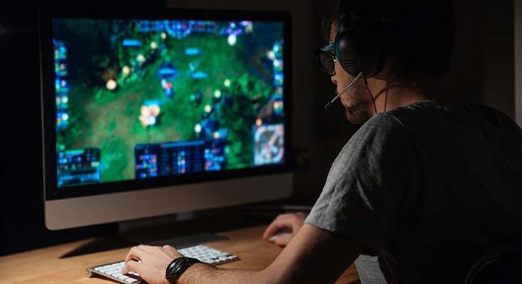

Компьютерные игры как хобби
 Тема компьютерных игр и их значения в жизни современного человека существует буквально с момента их появления в уже далеких 1970-х годах. И это по факту означает, что универсального ответа на вопрос соотношения плюсов и минусов этого вида досуга просто не существует. Произошедшие за былые десятилетия изменения в индустрии компьютерных игр невероятно поражают, от простейших однопользовательских аркад и симуляторов они проделали путь до красочных и масштабных MMORPG с одновременным участием миллионов геймеров. Но вот относительно их вреда и пользы для человека мнения так и остались диаметрально противоположными — от полной апологетики до ничуть не менее полного отрицания. Факт, красноречиво говорящий за себя.
Считается что играет в компьютерные игры исключительно молодежь
Но это вовсе не так, среди геймеров немало людей в зрелом возрасте, из них многие вполне состоялись в плане карьеры и личностного развития. Для них это зачастую хороший способ снять стресс после трудового дня, отдыхая и «отвязываясь» без каких-либо ограничений. Такой вот себе способ сжечь адреналин, выработавшийся от стрессов на работе, причем, совмещенный с удовольствием от увлекательного геймплея. При этом многие современные игры требуют определенного уровня знаний или же напротив, сами дают их игрокам. Взять тот же World of Tanks — сколько полезной исторической информации можно извлечь оттуда! А различные стратегии, начиная от знаменитой «Цивилизации» — проходя их, волей-неволей получаешь знания, вполне пригодные для использования и в реальном мире. Не говоря уже о тренировках в расчете многоходовых действий — крайне ценный в современном мире навык.
Многопользовательские компьютерные игры
Превосходное средство социализации, быстро развивающие коммуникативные навыки даже у самых стеснительных. Навыки командного взаимодействия, полученные в игре, вполне переносятся и в повседневную жизнь. При этом, сетевые баталии и беседы зачастую перерастают во встречи уже в оффлайне, то есть в реале, становясь началом деловых отношений и дружбы. Разумеется, не все так уж однозначно хорошо с компьютерными играми. Как и любое другое хобби, они требуют времени и определенных мер безопасности в отношении собственного здоровья. Совершенно понятно, что многочасовое непрерывное сидение за компьютером отнюдь не полезно для организма человека. Зрение плохо приспособлено к такой нагрузке, как и опорно-двигательный аппарат. Кроме того, люди с неустойчивой психикой могут чересчур увлечься процессом начать воспринимать его слишком уж всерьез. Наконец, большинство игр вовсе не бесплатны и требуют определенных финансовых растрат. В прочем, это справедливо и для других видов хобби. Но в целом, если не злоупотреблять компьютерными играми и не ставить виртуальный мир выше живого общения, воспринимая его лишь как одну из сторон жизни, это ничуть не плохой вид досуга, в сравнении с другими. Особенно если соблюдать нехитрые правила, предохраняющие от порчи зрение и понижающие нагрузки на позвоночник. В частности — делать перерывы, каждые полчаса отрываясь от экрана минут на 5-10. Еще лучше будет купить специальные компьютерные очки, защищающие глаза от вредного ультрафиолетового излучения дисплея. Ну а если есть лишние средства — то и специальное кресло геймера, сконструированное с расчетом на длительное пребывание за экраном. Оно снимает мышечную усталость и нагрузку на позвоночник, равномерно распределяя ее на организм. И здесь лучше не экономить, ведь речь идет о личном здоровье. Резюмируя сказанное, можно высказать следующее мнение. Компьютерные игры — такое же хобби как и множество других занятий, точно ничем не хуже. И если они не будут заменять остальную жизнь абсолютно, являясь ее суррогатом — плюсов от них явно больше, чем минусов.
>